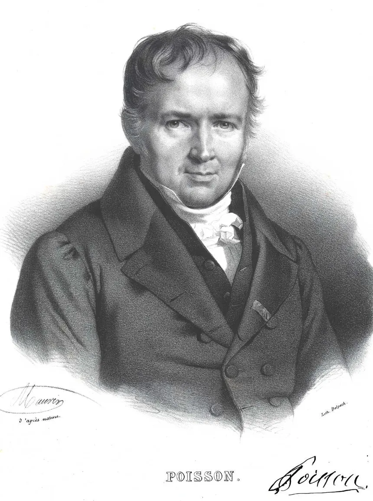

2025
Hi, I’m Kabir Singh Chhabra
I’m a data-driven problem solver with a background in Finance and Accounting, currently pursuing my Master’s in Business Analytics at UC San Diego. My work sits at the intersection of strategy, analytics, and innovation—whether it’s uncovering insights from complex datasets, building predictive models, or designing intuitive dashboards that drive action.
Curious by nature and resilient by design, I take pride in finding creative, scalable solutions—even when the path isn’t obvious. I’ve applied this mindset in corporate, academic, and startup settings, always prioritizing growth, impact, and clarity in communication.
When I’m not working with data, I’m leading initiatives at the Rady Data Analytics Club, or exploring new technologies that push the boundaries of what’s possible.
Let’s connect—I’m always excited to collaborate, explore new ideas, and help turn data into direction.

This report replicates and interprets the core findings of Karlan and List's (2007) field experiment on charitable giving. Using randomized data on over 50,000 prior donors, it evaluates how the presence and size of matching grants influence donation behavior. The analysis confirms that offering a match significantly increases the likelihood of giving, while increasing the match ratio (e.g., from 1:1 to 3:1) does not yield further gains. Importantly, the treatment encourages more people to donate but does not affect how much they give. These results, supported through statistical testing and simulation, highlight the role of psychological framing in driving prosocial behavior.

Poisson regression is a fundamental tool within the family of Generalized Linear Models (GLMs), particularly suited for modeling count data where the response variable represents counts that are non-negative integers.

This report evaluates the effectiveness of a promotional push notification campaign offering a Karaoke session deal to a large customer base. Using transaction history, demographics, and behavioral signals, two predictive models were developed: one to estimate the probability of purchase, and another to forecast the number of sessions bought conditional on response.

In this project, we conducted a comprehensive analysis of four major tech stocks — Apple (AAPL), Amazon (AMZN), Google (GOOG), and Microsoft (MSFT) — using historical data sourced from Yahoo Finance. We began by visualizing their closing prices, trading volumes, and daily return distributions to understand market behavior and volatility. Moving averages were overlaid to highlight trend direction and potential trading signals.